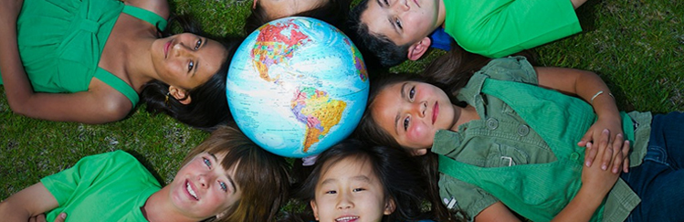

其他公益事业
青岛财经日报：我市建成10所海尔手拉手红领巾书屋
3月23日，海尔手拉手红领巾书屋揭牌仪式在青岛莱西市武备海尔希望小学举行。为提高我市农村地区希望小学的教学水平，中国青少年发展服务中心、青岛市青少年发展基金会联合海尔集团捐资20万元在青岛市10所海尔希望小学建立“海尔手拉手红领巾书屋”，每个图书室配备1500本图书和一组书架，大大丰富了学生的课余生活，拓宽他们的视野，励志他们的未来。
第206所海尔希望小学落成
2015年4月29日上午，集团捐建的临沂市郯城县泉源乡海尔希望小学正式落成。山东省、临沂市、海尔集团相关领导出席竣工仪式，与该校全体师生共同见证了这一重要时刻。集团多年来一直关注青少年的教育事业，目前已经在全国援建了206所希望小学，帮助许许多多的青少年改善了学习环境，促进中国基础教育的发展。据悉，郯城县泉源乡海尔希望小学同时也是山东省内第1000家希望小学.
海尔集团将成为联合国儿童基金会在中国家电类首家企业合作伙伴
近日，海尔集团与联合国儿童基金会达成共识，未来三年双方将在“爱生学校社会情感学习项目”上实现深度合作，在西部3个省3个县开展关爱行动，共同关注农村地区留守儿童的教育及心理健康问题。
公益清洗海尔中央空调启动入户维保活动
2013年11月12日，海尔中央空调近日发起“您的空气质量提升，我的健康生活创新”维护保养进社区公益活动，为用户提供免费清洗保养的差异化增值服务，受到小区居民的热烈欢迎。